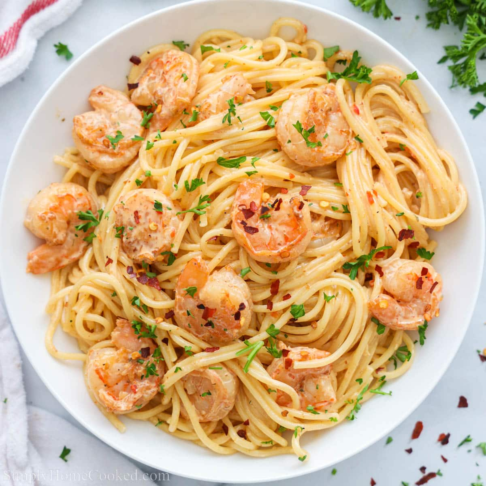

>
Shrimp Scampi Pasta
spaghetti pasta tossed with shrimp in a creamy or garlic butter sauce, topped with parsley and red pepper flakes.
Ingredients
8 oz spaghetti (half a standard box)
1 lb shrimp (peeled & deveined)
3–4 cloves garlic, minced
1/4 tsp red pepper flakes (optional)
1/2 cup white wine or chicken broth
Preparation
- Step 1:
Bring a pot of salted water to a boil.
- Step 2:
Add spaghetti and cook until al dente.
- Step 3:
Save 1/2 cup pasta water, then drain and set aside.
Cooking the Shrimp
- Step 1:
Pat shrimp dry and season with salt & pepper.
- Step 2:
In a large pan, heat 2 tbsp olive oil over medium-high.
- Step 3:
Add shrimp and cook 1–2 minutes per side until pink.
- Step 4:
Remove shrimp from the pan (don’t wash the pan—keep the flavor!).
Making the scampi sauce
- Step 1:
Lower heat to medium
- Step 2:
Add 3 tbsp butter to the same pan.
- Step 3:
Add minced garlic and optional red pepper flakes.
- Step 4:
Cook 30 seconds (don’t brown the garlic).
- Step 5:
Pour in white wine or chicken broth.
- Step 6:
Simmer 2–3 minutes until slightly reduced.
- Step 7:
Add the lemon juice.
Bring it together
- Step 1:
Add shrimp back into the sauce.
- Step 2:
Add cooked spaghetti.
- Step 3:
Toss everything together.
- Step 4:
Add a splash of reserved pasta water if you want it saucier.
- Step 5:
Taste and adjust salt, pepper, or lemon.